| 1. 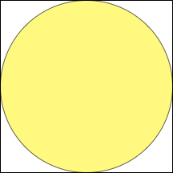 | 2. 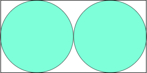 | 3. 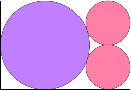 | ||
| Σ r = 1/2 = .500 Trivial. | Σ r = 2/3 = .666+ Trivial. | Σ r = 8(7 – 2√2) / 41 = .813+ Found by David W. Cantrell in July 2011. |
| 4. 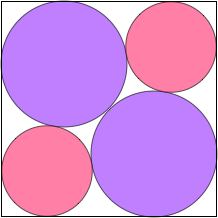 | 5. 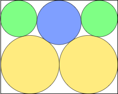 | 6. 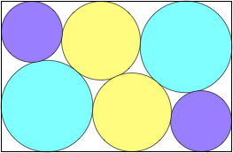 | ||
| Σ r = 1.006+ Found by David W. Cantrell in July 2011. | Σ r = 1.112+ Found by David W. Cantrell in July 2011. | Σ r = 1.525+ Found by David W. Cantrell in July 2011. |
7.
| 8. 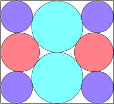 | 9. 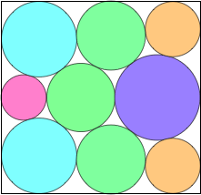 | ||
| Σ r = 1.324+ Found by David W. Cantrell in July 2011. | Σ r = 1.430+ Found by David W. Cantrell in July 2011. | Σ r = 1.528+ Found by David W. Cantrell in July 2011. |
| 10. 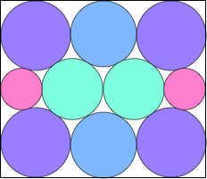 | 11. 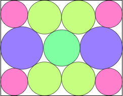 | 12. 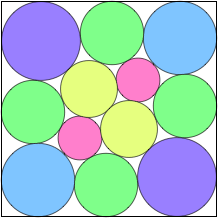 | ||
| Σ r = 1.610+ Found by David W. Cantrell in July 2011. | Σ r = 1.685+ Found by David W. Cantrell in July 2011. | Σ r = 1.765+ Found by David W. Cantrell in July 2011. |
| 13. 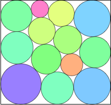 | 14. 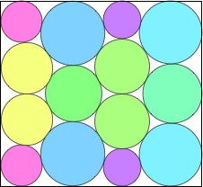 | 15. 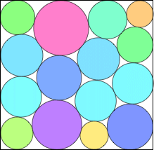 | ||
| Σ r = 1.835+ Found by David W. Cantrell in July 2011. | Σ r = 1.916+ Found by David W. Cantrell in July 2011. | Σ r = 1.985+ Found by David W. Cantrell in July 2011. |
| 16. 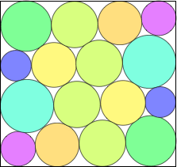 | 17. 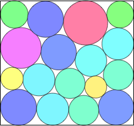 | 18. 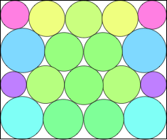 | ||
| Σ r = 2.059+ Found by David W. Cantrell in July 2011. | Σ r = 2.117+ Found by David W. Cantrell in July 2011. | Σ r = 2.180+ Found by David W. Cantrell in July 2011. |
| 19. 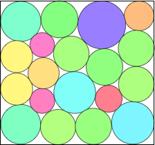 | 20. 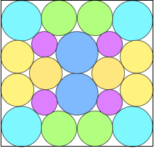 | 21. 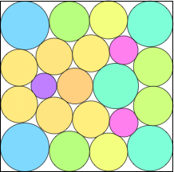 | ||
| Σ r = 2.241+ Found by David W. Cantrell in July 2011. | Σ r = 2.305+ Found by David W. Cantrell in July 2011. | Σ r = 2.364+ Found by David W. Cantrell in July 2011. |
| 22. 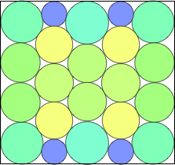 | 23. 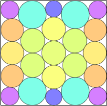 | 24. 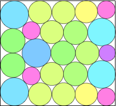 | ||
| Σ r = 2.425+ Found by David W. Cantrell in July 2011. | Σ r = 2.484+ Found by David W. Cantrell in July 2011. | Σ r = 2.535+ Found by David W. Cantrell in July 2011. |
25.
| 26. 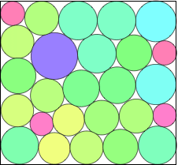 | 27. 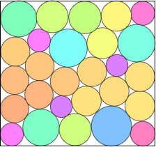 | ||
| Σ r = 2.592+ Found by David W. Cantrell in July 2011. | Σ r = 2.638+ Found by David W. Cantrell in July 2011. | Σ r = 2.687+ Found by David W. Cantrell in July 2011. |
| 28. 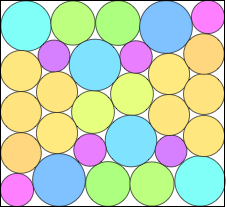 | 29. 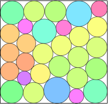 | 30. 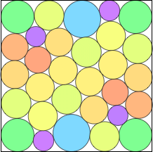 | ||
| Σ r = 2.740+ Found by David W. Cantrell in July 2011. | Σ r = 2.792+ Found by David W. Cantrell in July 2011. | Σ r = 2.844+ Found by David W. Cantrell in July 2011. |